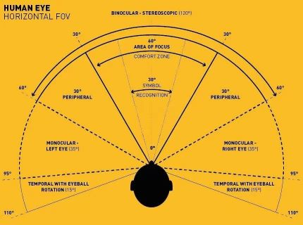
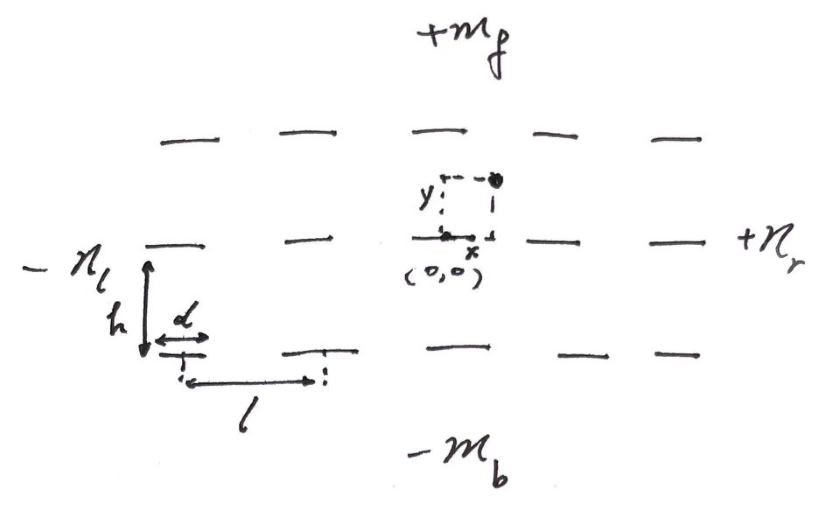

Frivolity: Theory of lazing in military training#
军训偷懒学#
欢迎你来看这篇军训偷懒指导！我想你心里已经为偷懒找好了理由甚至做出了哲学分析，那么我们这里抛开事实态度不谈，从技术的角度试着研究一下。
原则：敌进我退，敌退我进。
按照孙子“不战而屈人之兵”的理论，能在约架前一天用泥头车创死对方就绝不应约，能在军训训练前解决军训就绝不留到上场。应充分阅读请假和减训规则并最大化漏洞，还可以在训练中场休息时以各种名义一去不复返。
而训练过程中我将内容其分为三个门类：
军训技巧学：1. 使用厚厚的鞋垫或用来垫的物体，还可以使用硬硬的东西避免踩鞋 2. 前倾，但是动态——指可以来回前后倾倒，甚至引发教官对你的关心 3. 利用观测漏洞动手动脚，例如双脚向外折开休息 4. 表现出很严肃对待但实在很愚笨的样子 5. 喊话时滥竽充数，即挤眉弄眼扯喉咙，表现出声嘶力竭的样子
军训观测学：来考虑一下当我们视野里没有教官的时候是否可以乱动。

（人眼具有约\(\it 120^{\circ}\)的视野张角）
先假设所有人站成一个标准的方阵。我们把每个人看成一条线光源：

（共 \(m_f+m_b+1\) 行 \(n_l+n_r+1\) 列）
简化起见我们认为教官没有离方队那么近，其视野能够覆盖整个方队且面向方队，即能捕捉到视野内的动态。鉴于光路可逆，我们不予讨论前向\(120^{\circ}\)内的视角。每个线光源的两端与我们观测点 \((x, y)\) 的连线的角度之间即是遮挡域，我们逐一计算出各个人的遮挡域并取出交集。
计算过程以伪代码展示：
for i,j in (-n_l,-1)|(1,n_r),(-m_b,-1)|(1,m_f): # 遍历其他所有人
theta_r = atan2(j*h-y,i*l+d/2-x) # 四象限反正切(0-2pi)
theta_l = atan2(j*h-y,i*l-d/2-x)
thetas.append([theta_l,theta_r])
thetas = integrate(thetas)
prob = (countangle(thetas,0,pi/6)+countangle(thetas,5*pi/6,2*pi))*3/(4*pi) # 计算平均概率
func integrate(): # 合并有重叠的区间
sort the theta intervals by the left side and then exam if there is overlapping and integrate each by each.
func countangle(): # 计算在指定范围内的区间们的总长
calculate the length of each interval and add then together.
（可以预见，在具有一定人数且人靠内部的情况下，偷偷动动手是大概率不会发现的。一般教官要求的参数：\(h=l=75cm\)（左右转后一致），\(l-d = 10cm\ 即\ d=65cm\)。为了方便继续研究，\((x,y)\) 用以表示相对人中心一定偏移处的动作影响，如左手在腿边拨动手指应取 \((-32.5,0)\)）
可是我们知道很多时候是会被发现的，尤其像擦汗抓痒。一是这些动作持续时间长，风险在增加；二是幅度大，除了动动手指可能没什么影响，其他很多动作会对整个躯体带来震动，比如头部会起伏。我们再来考虑这个维度。
方法非常简单，我们只需要把参数换成脑袋的宽度和距离即可。同时部分线光源的区间由于比被观测者矮 \(H(i,j) \le H(0,0)\) 应删去。（不妨设一个正态分布，可以代入自己身高得到一个概率\(p\)也可以综合起来就是\(1/2\)）
准确的说，不同高度下这个剖面的参数都不相同，且应考虑视线斜向下的遮挡问题，但这个略显细节。还有一些数学上的操作和讨论，例如方阵不标准，即 \((il+\delta_1,jh+\delta_2)\)，在此不做赘述。
为一个简单的例子算个值：我的位置在 \(15\times 15\) 的方阵中的第 \(3\) 行第 \(7\) 列，那么当正前方没看到教官时动一动大概有 \(45.5\%\) 的概率被抓。（假设我是矮子即没有删人，代码见页末）
（需要指出这里最大的疏忽：教官的概率空间是怎么样的？真的是以我观测的角度均匀分布的吗？）
军训伪装学：理论上只要报告身体不适即可休息，但我们来假想一种不允许这样子干的疯狂训练。例如你可以双腿一软，缓缓躺倒或跪下，闭上眼睛或大声喘气……
最后再给各位支上几招（不负责噢）：
引蛇出洞/团伙作案：主动乱动或不舒服，吸引全部教官的注意力，为大家争取宝贵时间。多个教官可能需要逐个解决，形式不必拘泥，也可以’猜猜我是谁‘并从背后蒙住其眼睛。
狐假虎威：趁教官不注意模仿其口气下’坐！‘的命令，达到休息目的。或购买一只营长使用的哨子，趁大家不注意哔哔吹响，组织集体大休息。
鱼目混珠：购买一套跟教官穿的一模一样的军装，扮成教官，混入队伍并带领你的空气方队不知所踪。